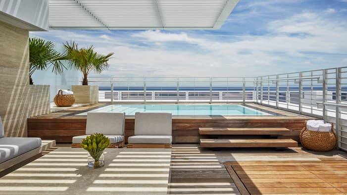
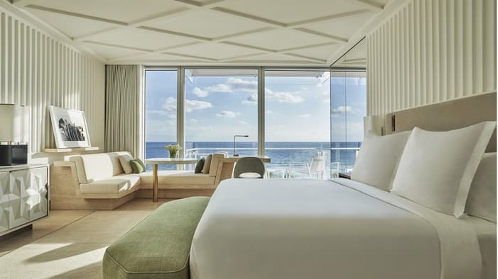
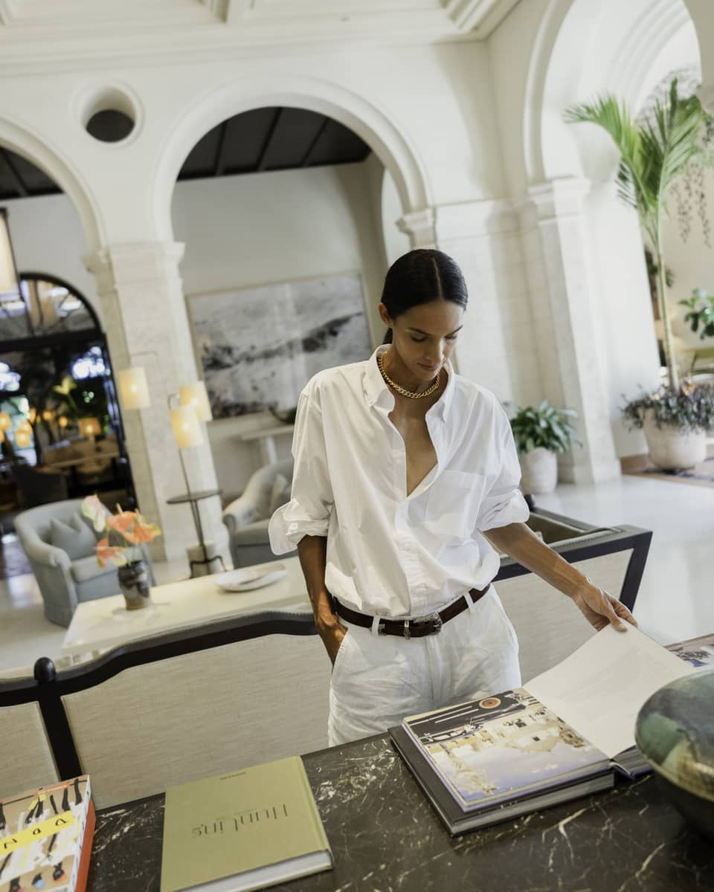
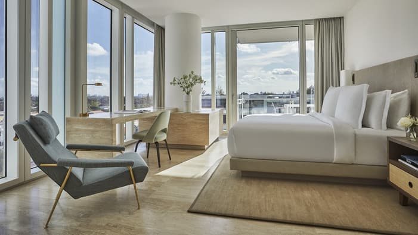

Favorite Hotels
Four Seasons Surf Club is the Miami-area stay I would use when a client wants quieter, more polished beachfront luxury with world-class service.
Four Seasons Hotel at The Surf Club is one of the cleanest luxury answers anywhere around Miami if the client wants beachfront calm, old-money feeling, and service that is present in every part of the stay without ever trying to show off. Surfside is quieter than South Beach, and that gives the whole property a more composed rhythm.
What makes it unique
It feels like old-money beachfront luxury with truly modern Four Seasons service.
Plenty of hotels can do beautiful rooms or a nice beach. Surf Club stands out because it layers history, discretion, and world-class service in a way that feels deeply polished from the second you arrive.
Stay
Residential-style oceanfront luxury
Joseph Dirand-designed rooms, suites, ocean bungalows, and villa-style top-end product make the stay feel elegant and private.
Dining
Small but serious lineup
Lido Restaurant, The Surf Club Restaurant, Winston's on the Beach, and the Champagne Bar cover the stay beautifully.
Best For
Quiet, polished beachfront ease
Ideal for families, refined couples, and travelers who want service and calm without the South Beach scene.
Known For
Service and historic glamour
The Surf Club heritage, Champagne Bar, and the overall sense of grace are what make the property special.


The overall setup
This property feels different right away. Surfside already gives it some distance from the louder parts of Miami Beach, and Four Seasons uses that to create something that feels much more discreet. The hotel is tied to the history of The Surf Club, which helps it feel like it belongs to a longer luxury tradition rather than simply trying to be the newest thing in town.
It is the kind of place I would use for clients who care about how a hotel feels minute to minute, not just what the lobby looks like on social media.
Rooms, suites, bungalows, and top-end stays
The accommodations are by Joseph Dirand, and that shows in the way everything feels restrained, elegant, and residential. The rooms already feel very composed, but the suite product is where the hotel becomes especially useful for longer stays, couples who want more space, and families. The ocean bungalows are a signature move, and the newer ultra-private villa-style product pushes the property even further into fully serviced residential territory.
The tone is important here: this is not glitzy luxury. It is the sort of stay where quiet and proportion are the luxury.


Restaurants, bars, and what life at the hotel feels like
Officially, the main dining lineup includes Lido Restaurant, The Surf Club Restaurant, Winston's on the Beach, and The Champagne Bar. That is not a giant lineup, but it does not need to be. Lido handles elegant coastal Italian extremely well. The Surf Club Restaurant gives the property a more formal, historic dinner option. Winston's is useful for easier oceanfront dining. The Champagne Bar is a real signature and one of the most atmospheric bars anywhere around Miami.
It all feels proportionate to the hotel. Nothing is noisy for the sake of noise.
Beach, pools, and things to do
The beach setup here is a huge part of the appeal. Surfside is calmer, and that makes the oceanfront feel more restorative. The pool scene stays elegant, and the whole property is better suited to actual unwinding than many Miami hotels. For clients who want beach time, spa time, good dining, and a room they really want to come back to, it is a very easy sell.
This is also a great base for clients who want access to Miami but do not want to live in the middle of its loudest energy all trip.
How good the service is
Service is the real reason this hotel stays so high in the conversation. Four Seasons at The Surf Club is one of the places where the guest feels held all the way through the stay. It is white-glove without being heavy, and that kind of ease is exactly what families and polished couples usually remember most.
Who I would book it for
- Families who want a more refined beach stay
- Couples who care about calm, service, and elegance
- Clients who want Miami access without South Beach noise
- Travelers who appreciate understated luxury more than scene-driven luxury
My honest take
Four Seasons Surf Club is one of the strongest luxury hotels in South Florida if the client’s taste leans discreet, understated, and very service-led. It is not trying to be flashy, and that is exactly why it is so good.